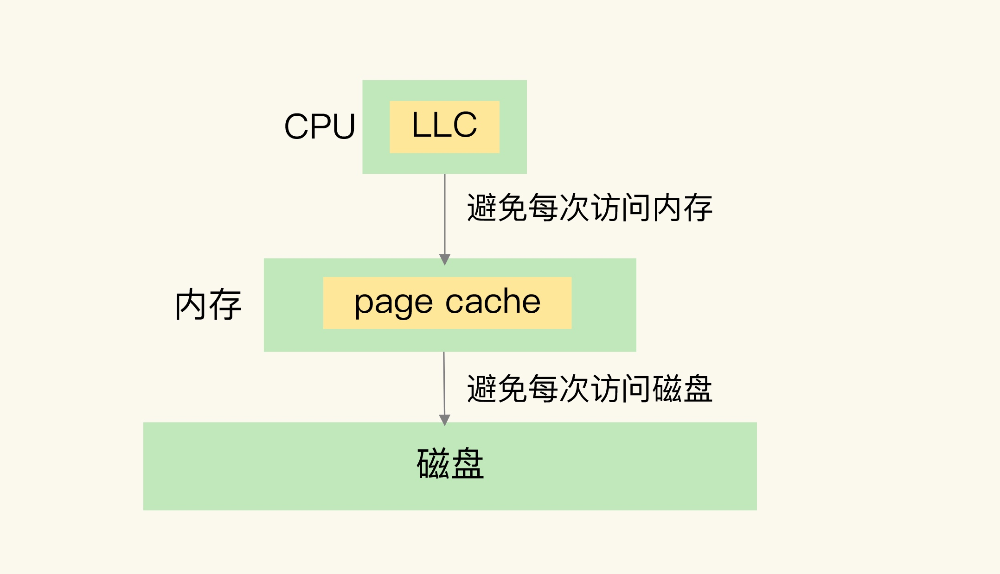
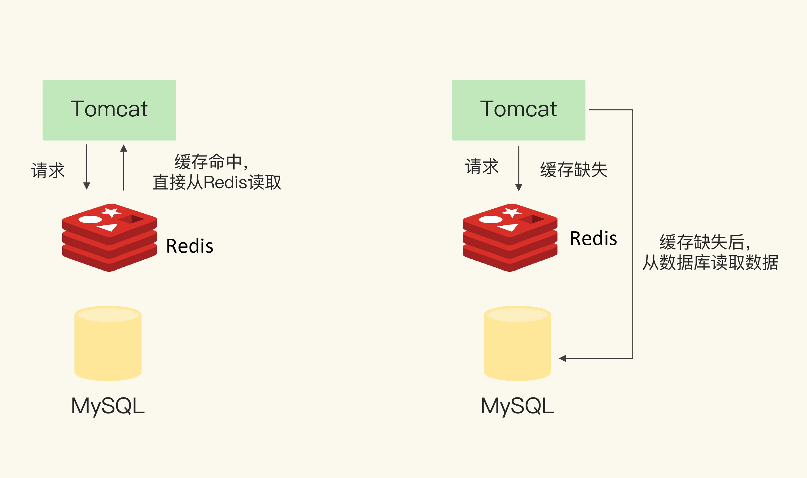
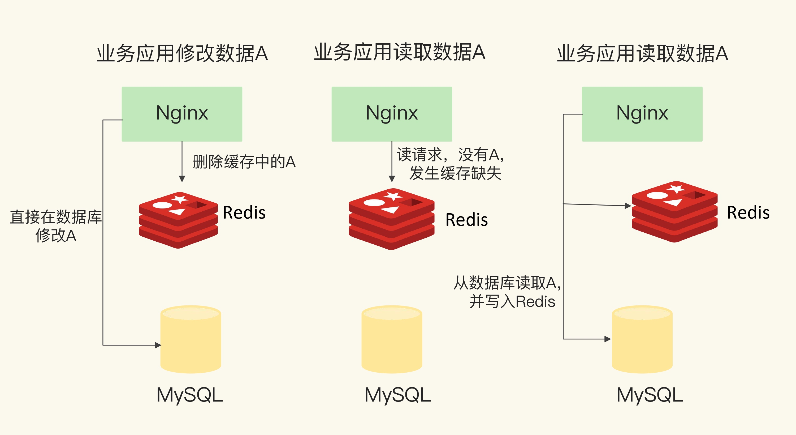
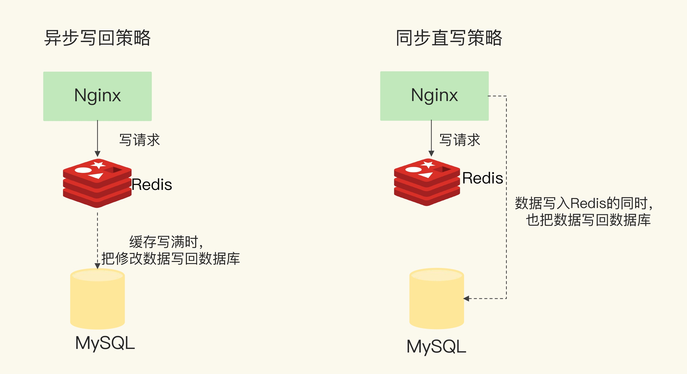

Redis 提供了高性能的数据存取功能，广泛应用于缓存场景中，可以有效的提升业务应用的响应速度，避免把高并发大大压力的请求发送给数据库。因此对于缓存的特征，Redis适用于缓存的优势，以及缓存的具体工作机制需要做到了解。
缓存特征
计算机系统中默认有两种缓存：
- CPU里的末级缓存 LLC：用来缓存内存中的数据
- 内存中的高速页缓存 page cache：用来缓存磁盘中的数据

- 第一个特征：在一个层次化的系统中，缓存一定是一个快速子系统，数据存在缓存中时，能避免每次从慢速系统中存取数据
- 第二个特征：缓存系统的容量小于慢速缓存系统的容量，他不可能把所有的数据放到缓存中
Redis 缓存处理请求的两总情况
- 缓存命中：Redis 中有相应数据，直接读取，性能非常快
- 缓存缺失：Redis 中没有保存相应的数据，读取后端数据库的数据

Redis最为缓存是基本操作有三种
- 应用读取数据时，先读取Redis中的
- 如果缓存缺失，从后端数据库读取
- 发生缺失时需要更新缓存
Redis 作为旁路缓存
Redis 是一个独立的系统，使用Redis作为缓存时，需要在程序中增加缓存操作的代码，，因此被称为旁路缓存
Redis 做缓存时需要做好三步
- 当应用程序需要读取数据时，需要在代码中显示的调用Redis的GET接口进行数据查询
- 如果缓存缺失，应用程序需要再和数据库连接读取数据
- 当缓存中的数据需要更新时，需要显示的调用SET操作接口进行数据操作
Redis 缓存类型
只读缓存
对于读请求先请求Redis，如果不存在访问数据库，所有的增删改都在数据库上操作，对于删改操作，则Redis直接删除Redis上的数据，下次读取时缓存缺失，从数据库中读取，然后更新缓存，加速访问数据。

所有的最新数据都在数据库中，提供了数据可靠性保证。数据不会丢失，针对用户只读数据时，可是使用只读缓存
读写缓存
对于应用程序的所有读写请求都会发送到Redis上，在缓存中直接对数据进行操作，这样处理结果会很快返回业务应用，提升了响应速度。
最新数据在Redis上所以可能会有数据丢失，为此有同步回写和异步回写保证数据安全。同步保证数据可靠性，异步保证响应速度

同步回写
请求发给Redis同时，也发给数据库，二者都更新成功后返回给请求方，这样保证数据的可靠性但是会导致响应延迟增加
异步回写
所有写请求都先在缓存中处理。等到这些增改的数据要被从缓存中淘汰出来时，缓存将它们写回后端数据库，但是可能存在数据丢失的问题